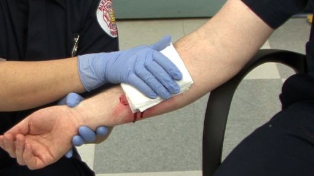
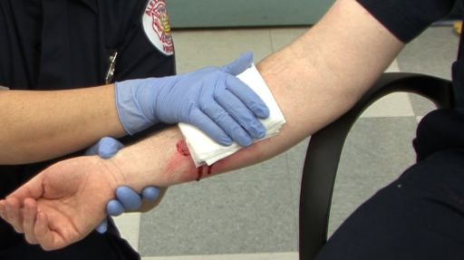

İstənilən damarın zədələnməsi qanaxma ilə nəticələnir. Əgər qanaxma arteriyada baş verirsə – arterial, venada baş verirsə – venoz, kapilyarlarda baş verirsə – kapilyar, daxili parenximalı orqanlarda baş verirsə – parenximatoz qanaxma adlanır.

Arterial qanaxma təzyiq altında və çox sürətli olur. Qan arteriyada böyük təzyiq altında olduğundan, yara yerindən fəvvarə (pulsasiya, vurğu) kimi axır və laxtalanmanın yaranmasını çətinləşdirir. Bu cür qanaxmanın dayandırılması çətin olduğuna görə çox təhlükəlidir. Qısa müddət ərzində 1–1,5 litr qanın itirilməsi zərərçəkənin ölümünə səbəb ola bilər. Arterial qan oksigenlə zəngin olduğu üçün al qırmızı rəngdə olur.
Venadan qanaxmanı dayandırmaq, arteriyadan qanaxmanı dayandırmaqdan asandır.
Venalar dəri səthinə yaxın olduğu üçün tez-tez zədələnir.Venadakı qan arteriyadakı qana nisbətən aşağı təzyiq altındadır və yara yerindən fasiləsiz şəkildə, yavaş-yavaş, çox vaxt isə damcılarla axır. Yalnız bədənin dərin, məsələn, gövdə və ya baldır venaları zədələndikdə, dayandırılması çətin olan güclü qanaxma baş verir. Bu cür qanaxmanı yaranın üzərinə sıxıcı sarğı qoymaqla saxlamaq mümkündür. Venoz qan karbon qazı ilə zəngin olduğu üçün tünd qırmızı rəngdə olur.
Kapilyar qanaxma qanaxmanın ən çox rast gəlinən və geniş yayılmış növüdür. Damarların mənfəzi kiçik olduğundan və qan aşağı təzyiqlə axdığından, bu qanaxma çox vaxt zəif olur.Kapilyar qanaxma zamanı qan asan laxtalanır (1–3 dəqiqə müddətində).
Parenximatoz qanaxma parenximatoz orqanların (baş beyin, ağciyər, qaraciyər, mədəaltı vəzi, ağciyər, dalaq,böyrəklər, daxili sekresiya endokrin vəziləri) zədələnməsi zamanı müşahidə olunur. Bu orqanlar qan damarları və kapilyarlarla zəngindir. Parenximatoz orqanda zədələnmiş damarlar yığılmır və toxuma vasitəsilə sıxılmır. Bu zaman bütün yara səthindən qan axır. Ona görə qanaxma güclü, həyat üçün təhlükəli olur. Belə qanaxmalar uzunmüddətli və çox miqdarda olur. Bu cür qanaxmaları saxlamaq adi üsullarla çox çətindir. Qan adətən boşluqlara yığılaraq, orada toplanır (daxili qanaxma).
Qanaxmalar iki formada – xarici və daxili olur.Qanın damarlardan və ya ürəkdən xarici mühitə axması xarici qanaxma adlanır.Qanın damarlardan və ya ürəkdən orqanizmin xarici mühitlə əlaqəsi olmayan bədən daxilinə və daxili boşluqlara (plevra – ağciyər pərdəsi boşluğu, perikard – ürək kisəsi, qarın boşluğu, oynaq boşluğu, beyin mədəcikləri) axması daxili qanaxma adlanır. Xarici qanaxmanı aşkar etmək çətinlik törətmir. Daxili qanaxmada qanaxmanın fiziki əlamətləri görünmür və ya zərbə nəticəsində ancaq qançır yaranır. Bu qanaxmalar ən təhlükəli qanaxma sayılır.
daxili qanaxmada bu əlamətlər mövcuddur:
Diqqət! Daxili qanaxmalar görünmədiyi üçün çox təhlükəli olur və tez bir zamanda şokla və ölümlə nəticələnə bilər!
Güclü qanaxmalarda, qanaxma yara təmizlənməmiş dayandırılmalıdır,çünki zərərçəkənin həyatı bundan asılıdır.Kiçik qanaxmalar qanın laxtalanması hesabına özü dayanır. Bəzi hallarda zədələnmiş qan damarlarının mənfəzi böyük olur və ya qan böyük təzyiqlə axır, qanın laxtalanması bu zaman çətinləşir. Belə hallarda, qanaxma həyat üçün təhlükəlidir.Xarici qanaxmanı müvəqqəti dayandırma üsülları aşağıdakilardı:
Birbaşa sıxmaq Xarici qanaxmanın birbaşa sıxmaqla dayandırılmasında əl və barmaqlardan istifadə edilir. Qan axan yeri birbaşa sıxmaqla qanaxma kəsilir və qan laxtasının əmələ gəlməsinə imkan yaranır. Qan laxtası qan axan damarı tutur.Damarın birbaşa sıxılması 10 dəqiqədən artıq olmamalıdır. Sonra sıxılan yer buraxılır və lazım gələrsə, yenidən 10 dəqiqə ərzində sümüyə sıxılır.
Ətrafların yuxarı qaldırılması üsulu Əgər əzələ və sümük zədələnməsi yoxdursa, qan axan nahiyəni sıxmaqla bərabər yuxarı qaldırın. Zədələnmiş nahiyənin dikəldilməsi də qan axınını zəiflədir və laxtalanmaya kömək edir. Buna görə də birbaşa sıxmadan sonra zədələnmiş qolu və ya ayağı ürək səviyyəsindən yuxarıda saxlamaq (dikəltmək) məsləhətdir.
 

Ətrafları maksimal büküb qanaxmanı saxlamaq üsulu Ətrafların oynaqlardan maksimal bükülməsi çox zaman zərərçəkən tərəfindən özünə yardım kimi həyata keçirilir. Ətrafların bu vəziyyətdə saxlanılması zamanı bükük yerlərindəki qan damarları sıxılır. Bükülmüş oynaq çuxuruna pambıq topası, hər hansı parçadan hazırlanan tampon, fərdi paket və ya istənilən elastik yumşaq əşya qoyub ətrafın bükülən hissələrini bir-birinə sıxmaqla təsiri gücləndirmək olar. Bazu nahiyəsində qanaxma zamanı dirsək oynağından, baldır nahiyəsində diz oynağından, bud nahiyəsində bud-çanaq oynağından ətrafları maksimal bükməklə qanaxma saxlanılır
Yaraya sıxıcı (təzyiqedici) sarğının qoyulması Bəzi güclü qanaxmalar zamanı yaranın birbaşa sıxılması və ətrafın yuxarı qaldırılması qanaxmanı dayandırmağa kömək etmirsə, sıxıcı (təzyiqedici) sarğı qoyun. Qanaxmanı dayandırmaq üçün steril, olmadıqda təmiz materiallardan (salfet, tənzif) istifadə edin. Steril (təmiz) tənzif yaranın üstünü və ətraflarını əhatə etməlidir. Yaranın üzərinə steril salfet (tənzif) qoyduqdan sonra üstündən bintlə və ya başqa sarğı materialı ilə sıxıcı sarğı qoyun.

SİZİN RƏYİNİZ BİZİM ÜÇÜN ÖNƏMLİDİR!